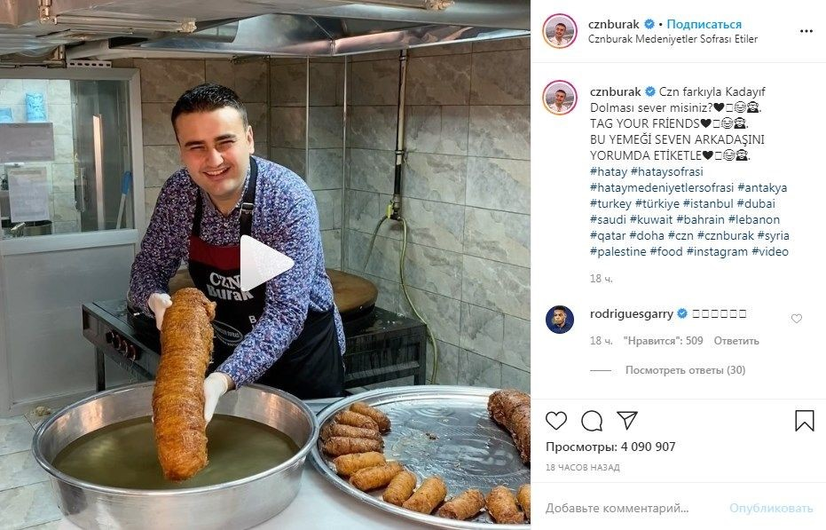
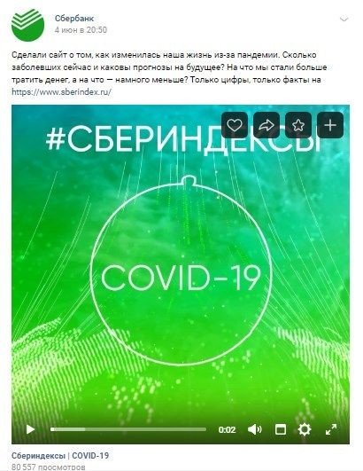

Создание контент-план для эксперта.

Экспертный контент хорошо помогает в продвижении компании и личного бренда. Давайте разберемся, что это такое, как он работает и как его создавать.
Как работает экспертный контент?
В первую очередь он привлекает внимание аудитории — тех, кто задумывается о покупке товара. И тех, кто в принципе интересуется вашей нишей. Кроме того, он:
Повышает узнаваемость. Экспертные материалы создают у потенциальных клиентов ассоциативный ряд с вашей компанией. Вы показываете подписчикам, что хорошо разбираетесь в вопросе, а они все чаще читают вас и запоминают бренд. И со временем, когда идет разговор о продукте, вспоминают вашу компанию, а не конкурентов.
Признавайтесь, узнали этого парня? Это — пример, как контент влияет на узнаваемость: если где-то говорят об огромных порциях еды, многие вспоминают турецкого улыбчивого повара
Увеличивает лояльность. Люди больше доверяют бренду, если он рассказывает какие-то важные для них вещи. Еще в 2015 году специалисты агентства NewsCred из Нью-Йорка выяснили, что 62 % потребителей осознают, что на лояльность к бренду влияет его контент. А по данным Content Marketing Institute, в 2019 году 81 % компаний заинтересованы в создании контента, повышающего лояльность, в том числе экспертного.
Стимулирует охваты. Пользователи соцсетей часто репостят что-то полезное: подборки, советы и лайфхаки. А еще рассказывают о них друзьям. Так постепенно растет аудитория — благодаря репостам приходят новые подписчики, а часть круга лояльных пользователей тоже со временем начинает как-то взаимодействовать с брендом. Все это работает, если постоянно постить полезный контент. Пары постов в месяц точно не хватит — нельзя запостить одну подборку и 2–3 инфографики и ждать кучи охватов и стремительного роста узнаваемости и лояльности.
Шок: экспертный контент нужен не всем
Да, он хорошо работает на лояльность и узнаваемость, но при этом требует много сил. И поэтому нужен не всем. Например, он не окупится, если:
- просто перепродаете товары без какой-либо добавочной ценности в виде сервиса, дополнительной гарантии или чего-то еще;
- единственное преимущество товара — его цена, а в остальном он такой же, как у конкурентов;
- производите массовые товары повседневного спроса, рынок которых давно сформирован;
- ведете оффлайн-бизнес, ориентированный на проходимость: например, управляете кафе или рестораном.
Во всех этих случаях покупатели выбирают вас не за экспертность, а по другим причинам. И распыляться на экспертные посты в соцсетях в этом случае не стоит. Зато если продаете сложные продукты с длинным циклом сделки или оказываете какие-то услуги, они нужны, чтобы выделиться на фоне конкурентов
Везде, где надо показать свои навыки, важна экспертность: можете давать советы, рассказывать об ошибках или говорить о своем опыте
С другой стороны экспертиза уместна везде, даже если перепродаете дешевые аксессуары из Китая. Вы можете продемонстрировать свои знания в уходе за товаром или рассказать о том, по какому принципу подбираете позиции в каталог. Это повысит доверие к вам как к продавцу.
Проведите эксперимент: сделайте несколько экспертных постов в Instagram или в другой соцсети, подождите пару дней и оцените результат. Посмотрите, сколько лайков, комментариев и репостов они набрали в сравнении со стандартными постами. Если больше — продолжайте эксперимент. Если активность никакая — возможно, не стоит распыляться на демонстрацию экспертизы, и лучше дальше делать вовлекающий контент.
7 идей, где брать экспертный контент
Поделитесь опытом решения проблем. Вспомните — в каждом бизнесе случались нестандартные ситуации или просто сложные проекты. Расскажите подписчикам, как справлялись с этим: например, как организовывали доставку в труднодоступный район или подбирали оборудование при ограниченном бюджете. Это покажет, что вам можно доверять сложные задачи.
- Структура экспертного поста может быть такой:
- сначала рассказываете, в чем была проблема;
- потом — как ее решили и почему именно так;
- напоследок — что из этого вышло и к какому результату пришли.
Не отвлекайтесь на лишние детали — лучше сделать короткий пост, чем написать длинный материал, который никто не дочитает.
Например, здесь редактор рассказала о конкретной ситуации, но дала советы в общем — это тоже описание решения проблемы
Дайте совет, связанный с работой. Занимаетесь маркетингом — расскажите, на какие метрики на самом деле смотреть в отчетах, чтобы подрядчик не обманул. Шьете обувь на заказ — рассказывайте, как за ней ухаживать. Продаете газонокосилки — объясните, как их обслуживать, чтобы они не ломались. Это покажет, что вы разбираетесь в вопросе.
Например, здесь редактор рассказала о конкретной ситуации, но дала советы в общем — это тоже описание решения проблемы
Расскажите какие-то неочевидные вещи. В любой работе есть нюансы, которые незаметны новичку или человеку со стороны. Вы можете просто рассказать о них: например, о том, как готовите опалубку к транспортировке или как подготавливаете вопросы, чтобы интервью получилось интересным.
Здесь, например, рассказывают о личном опыте — неочевидных тонкостях учета в программе
Опубликуйте кейс. Да, это тоже экспертный контент, потому что он показывает ваши навыки и возможности.
-
Есть простые правила, как написать экспертный пост:
- расскажите, какая компания к вам обратилась, и какая задача стояла перед вами;
- объясните, как выбирали инструменты или методы решения задачи;
- расскажите подробнее, что именно сделали и каких промежуточных результатов достигали;
- покажите, что получилось в итоге.
Можно опубликовать кейс на сайте и дать в соцсетях ссылку на него. А если хотите запостить что-то крутое в соцсети, пишите коротко и без лишних лирических отступлений — они будут только мешать.
Оцените пример: яркое фото привлекает внимание, а в описании есть процесс продвижения и результаты
Отвечайте на вопросы подписчиков. Да, даже придумывать ничего не придется: просто пролистайте комментарии под постами, выберите парочку вопросов и ответьте на них. Можно даже завести регулярную рубрику и собирать вопросы с помощью «Google Форм». Или просто выделять 5–10 минут в день на поиск новых вопросов и отвечать на них скопом, например, по понедельникам. А еще можно отвечать на вопросы в Stories в Instagram или в прямых эфирах — для этого есть отдельная функция. Можете делать так, как вам удобно: главное, чтобы пользователи видели ответы.
Ответ на вопрос подписчиков может быть таким, с попутной рекламой бренда. И это тоже экспертный пост — администрация показывает, что следит за рынком отелей и помогает посетителям решить проблемы
Возьмите интервью у эксперта. Если нет идей попросите именитого специалиста в вашей области дать вам интервью. Можно спросить его о развитии ниши или задать ему вопросы из комментариев под вашими постами. Кстати, интервью в качестве экспертного контента дает дополнительное преимущество: охват. Обычно спикеры делают репост интервью на свои страницы, и оттуда к вам могут прийти подписчики.
Не хотите брать интервью у кого-то — дайте его сами: найдите СМИ, которому нужен спикер, и предложите свою кандидатуру. Так аудитория увидит, что ваше мнение ценится, и будет вам доверять
Проведите исследование. Если у вас достаточно подписчиков, проводите опросы в соцсетях и публикуйте их результаты. Только не высасывайте темы из пальца — спрашивайте о том, что людям интересно узнать. И если проводите исследование для внутренних нужд — например, сравниваете цены и функции нескольких CRM-систем — можно опубликовать результаты в открытом доступе.
«Сбербанк» поделился данными исследований на отдельном сайте — это тоже экспертный контент
Так же можно делиться какими-то внутренними штуками, которые делаете для себя. Калькулятором в «Google Таблицах», скриптом для расчёта стоимости доставки, шпаргалкой для предварительной сметы строительства и так далее.